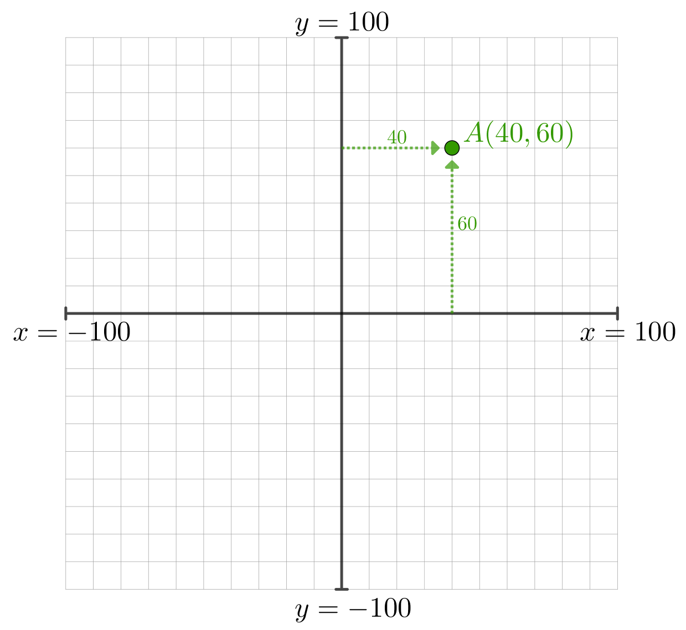
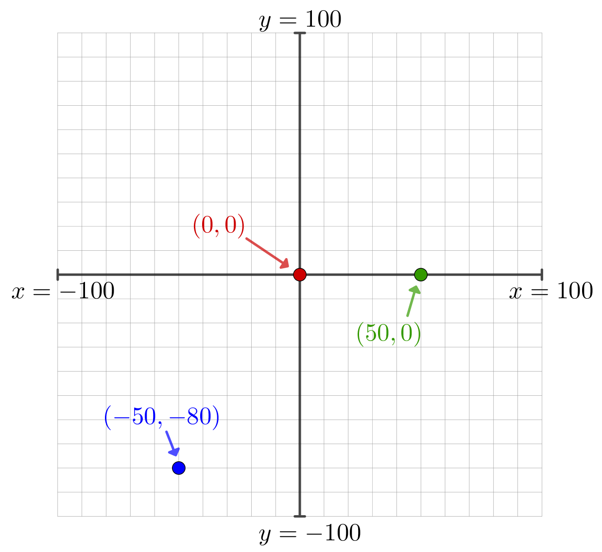
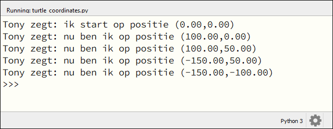
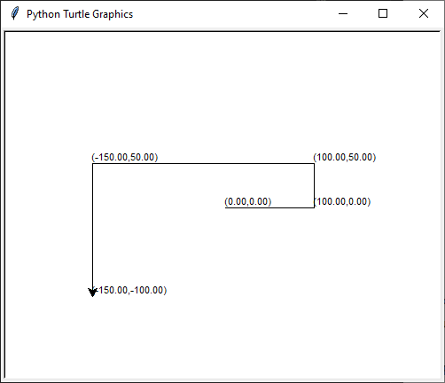
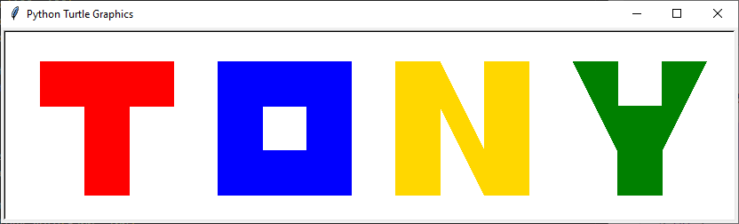
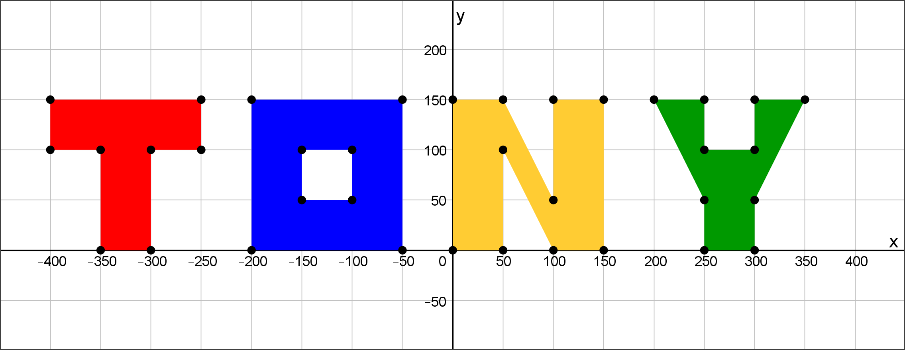
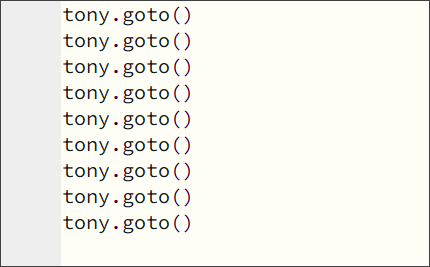
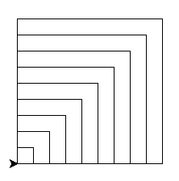
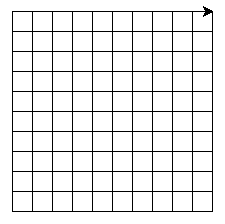

4. Coördinaten#
Tot nu toe bewoog je de turtle met de functies turtle.fd() en turtle.bk() een aantal pixels vooruit of achteruit. En met turtle.lt() en turtle.rt() kon je de turtle laten draaien om vervolgens een andere richting in te slaan. Maar soms is het handiger de turtle in één keer naar een bepaalde plek in het venster te sturen. Bijvoorbeeld naar de hoek linksonder, of naar het middelpunt. Dat kun je doen door coördinaten te gebruiken.
Coördinaten zijn getallen die aangeven waar een punt ligt in een vlak. Wellicht ben je al bekend met geografische coördinaten die we gebruiken om plaatsen op de wereldkaart aan te duiden. Op Google Maps kun je bijvoorbeeld de coördinaten van Gymnasium Beekvliet in Sint-Michielsgestel vinden: (51.642174818007355, 5.3640463837966434).
4.1. Assenstelsel#
Om met coördinaten te werken, heb je een assenstelsel nodig. Meestal gebruiken we een horizontale x-as en een verticale y-as.

Elk punt in het vlak kun je vervolgens aangeven met een x-coördinaat en een y-coördinaat. In de afbeelding hierboven zie je dat het punt A de coördinaten (40, 60) heeft, omdat je op de x-as 40 naar rechts gaat en op de y-as 60 omhoog. Coördinaten noteer je altijd tussen ronde haakjes: (x, y).
Hieronder zie je de coördinaten van drie andere punten in het vlak. Het punt (0, 0) noemen we ook wel de oorsprong van het assenstelsel. Het punt (50, 0) bereik je door vanuit de oorsprong 50 naar rechts te gaan en 0 omhoog. De mintekens bij de coördinaten (-50, -80) geven aan dat je vanuit de oorsprong 50 naar links gaat en 80 omlaag.

4.2. Coördinaten en turtle#
In Python kun je met de volgende functies de coördinaten van de turtle opvragen:
Functie |
Werking |
|---|---|
|
Geeft de positie (x, y) van de turtle terug. |
|
Geeft de x-coördinaat van de turtle terug. |
|
Geeft de y-coördinaat van de turtle terug. |
Kopieer de volgende code in een nieuw Mu editor bestand met de naam turtle_coordinates.py en kijk wat er gebeurt.
1import turtle
2
3# Gebruik een turtle op de laagste snelheid
4tony = turtle.Turtle()
5tony.speed(1)
6
7# Beweeg de turtle en print de positie.
8print("Tony zegt: ik start op positie", tony.pos())
9tony.fd(100)
10print("Tony zegt: nu ben ik op positie", tony.pos())
11tony.lt(90)
12tony.fd(50)
13print("Tony zegt: nu ben ik op positie", tony.pos())
14tony.lt(90)
15tony.fd(250)
16print("Tony zegt: nu ben ik op positie", tony.pos())
17tony.lt(90)
18tony.fd(150)
19print("Tony zegt: nu ben ik op positie", tony.pos())
Op regels 4 en 5 wordt de turtle aangemaakt en de snelheid op 1 gezet, zodat je goed kunt volgen wat er gebeurt. Met de functie print() in regel 8 tonen we de huidige positie van tony in Mu editor (onder je code). Vervolgens gaat tony bewegen en wordt telkens de positie afgedrukt.

Met print() druk je iets af in het Mu editor venster, maar misschien vind je het handiger om de code in het turtle venster te zien. Dat kan met de functie turtle.write().
Functie |
Werking |
|---|---|
|
Schrijft de waarde van de variabele |
Vervang de print() statements in de regels 8, 10, 13, 16 en 19 in turtle_coordinates.py door de aanroep tony.write(tony.pos()).
1import turtle
2
3# Gebruik een turtle op de laagste snelheid
4tony = turtle.Turtle()
5tony.speed(1)
6
7# Beweeg de turtle en print de positie.
8tony.write(tony.pos())
9tony.fd(100)
10tony.write(tony.pos())
11tony.lt(90)
12tony.fd(50)
13tony.write(tony.pos())
14tony.lt(90)
15tony.fd(250)
16tony.write(tony.pos())
17tony.lt(90)
18tony.fd(150)
19tony.write(tony.pos())
Nu schrijft tony de coördinaten tijdens het tekenen.

4.3. Tekenen met coördinaten#
De coördinaten van de turtle opvragen is aardig, maar het wordt nog leuker als je de turtle ook naar bepaalde coördinaten toe kunt sturen. Daarvoor gebruik je de functie turtle.goto(x, y). De Nederlandse vertaling van ‘go to’ is ‘ga naar’.
Functie |
Werking |
|---|---|
|
Beweegt de turtle naar de positie ( |
Vervang de code in turtle_coordinates.py door het onderstaande programma om de functie goto() in actie te zien.
1import turtle
2
3tony = turtle.Turtle()
4
5tony.goto(100, 0)
6tony.goto(100, 100)
7tony.goto(0, 100)
8tony.goto(0, 0)
Wow, in plaats van 7 instructies (4 keer turtle.fd(100) en 3 keer turtle.lt(90)) hebben we nu nog maar 4 instructies nodig om een vierkant te tekenen!
Opdracht 01
Maak een nieuw bestand in Mu editor met de naam tony_coordinates.py. Schrijf daarin een programma dat onderstaande tekening maakt.

De coördinaten van de hoekpunten kun je aflezen in de onderstaande figuur.

Tip
Bij deze opdracht moet je heel vaak tony.goto() aanroepen. Om het typwerk te versnellen kun je handig copy paste (kopiëren en plakken) gebruiken. Typ in Mu editor de regel tony.goto(), selecteer de zojuist getypte tekst met de muis en druk op Ctrl + C om te kopiëren. Ga naar de volgende regel en druk op Ctrl + V om te plakken. Herhaal Ctrl + V om in een mum van tijd regels met tony.goto() te vullen. Daarna hoef je alleen nog de coördinaten tussen de haakjes in te vullen.

Weet je niet hoe je moet beginnen? Open dan Hint 1 hieronder. Daarin wordt de code voor de rode letter T gegeven.
Hint 1
Dit is de code om de letter T te tekenen:
1import turtle
2
3tony = turtle.Turtle()
4tony.shape('circle')
5
6# Teken de letter T
7tony.pencolor("red")
8tony.fillcolor("red")
9tony.penup()
10tony.goto(-400, 150)
11tony.pendown()
12tony.begin_fill()
13tony.goto(-400, 100)
14tony.goto(-350, 100)
15tony.goto(-350, 0)
16tony.goto(-300, 0)
17tony.goto(-300, 100)
18tony.goto(-250, 100)
19tony.goto(-250, 150)
20tony.goto(-400, 150)
21tony.end_fill()
22
23# Teken de letter O
Hint 2
De letter O bestaat eigenlijk uit twee vierkanten: een groot blauw vierkant met een kleiner wit vierkant erin. Teken eerst het blauwe en daarna het witte vierkant.
Door coördinaten in loops te gebruiken, kun je leuke effecten bereiken. Probeer het onderstaande maar eens.
1import turtle
2
3tony = turtle.Turtle()
4
5zijdelengte = 20
6while zijdelengte <= 200:
7 tony.goto(zijdelengte, 0)
8 tony.goto(zijdelengte, zijdelengte)
9 tony.goto(0, zijdelengte)
10 tony.goto(0, 0)
11 zijdelengte = zijdelengte + 20
De while loop zorgt ervoor dat 10 vierkantjes worden getekend. De eerste met zijden van 20 pixels, de volgende met zijden van 40 pixels, dan 60 pixels, enzovoort.

Opdracht 02
Kopieer onderstaande code naar een nieuw bestand in Mu editor met de naam turtle_grid.py. Het programma tekent een aantal horizontale lijnen van 200 pixels op een onderlinge afstand van 20 pixels.
1import turtle
2
3tony = turtle.Turtle()
4
5z = 0
6while z <= 200:
7 tony.penup()
8 tony.goto(0, z)
9 tony.pendown()
10 tony.goto(200, z)
11 z = z + 20
Op regel 6 zie je while z <= 200 staan. Dat betekent: ‘zolang z kleiner of gelijk is aan 200’. In de while loop heeft z dus achtereenvolgens de waarde 0, 20, 40 … 180, 200.
Voeg aan dit programma een tweede while lus toe die verticale lijntjes tekent, zodat een rooster (Engels: grid) ontstaat.
